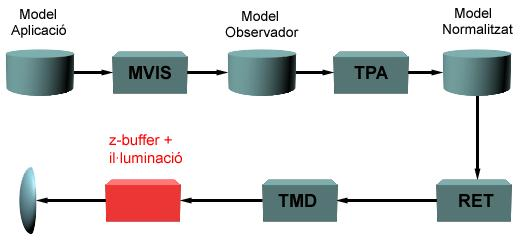

Aquest algorisme determina la visibilitat en espai imatge i està especialment adequat a escenes formades per cares planes opaques. Requereix conèixer les coordenades (x,y) dels vèrtexs dels polígons respecte al sistema de coordenades de dispositiu i la seva distància a l'observador (profunditat).
La següent figura mostra el diagrama de blocs funcionals de la implementació del procés de visualització analitzada en el capítol 6, i la ubicació de l'algorisme de depht-buffer en ell. Per cada cara a visualitzar (interior a la piràmide de visió i no eliminada per filtrat de cares), es coneix les coordenades (x,y,z) dels seus vèrtexs. Les dues primeres seran valors enters en coordenades de dispositiu; la coordenada z mantindrà el valor del model normalitzat i estarà compresa en l'interval [-1.0,1.0]. Cal recordar que en aquest darrer model, l'observador es troba ubicat a l'infinit sobre l'eix z negatiu i per tant quant més gran és el valor de la coordenada z, més lluny es troba el punt de l'observador. Per tant el valor de z és proporcional a la profunditat del punt.
|  |
La implementació de l'algorisme requereix la utilització de dues taules auxiliars (buffers en denominació anglesa) de la mateixa resolució que la vista; la component [x][y] de cada taula conté informació associada al píxel (x,y). Aquestes taules s'anomenen:
L'algorisme de principi és el següent:
algorisme z-buffer
Inicialitzar buffers
per cada_cara fer
per cada_pixel_de_la_vista fer
si la cara es projecta en el pixel llavors
z:=Calcul_profunditat_cara (cara, pixel)
si z < depht_buffer(pixel) llavors
depht_buffer (pixel) := z
color_buffer (pixel) := color_cara (pixel,z,cara)
fsi
fsi
fper
fper
mostrar buffer_color
falgorisme
Hom pot observar que el principal cost computacional radica en els processos de: verificar si un píxel és interior a la projecció del polígon, càlcul de profunditat i del color.
El conjunt de diapositives següent mostra l'execució pas a pas de l'algorisme per a una escena simple formada per tres polígons (A,B,C). Inicialment els buffers estan inicialitzats a color=(0,0,0) i a profunditat màxima (si disposa de tres bits:111). Per cada polígon s'analitza, seqüencialment, en quins píxels es projecta la seva àrea interior; per cada píxel es calcula la coordenada z del punt de la cara que s'hi projecta (les coordenades x i y són les mateixes que les del píxel). Si aquesta coordenada és més petita que l'emmagatzemada en la component corresponent del buffer de profunditats, implica que aquest punt és més proper a l'observador que qualsevol altre anteriorment processat que es projectava en el píxel i per tant serà visible per l'observador. En aquest cas s'actualitza la component de la taula de profunditats i es calcula el color del punt que es guarda en la component corresponent de la taula de colors. El càlcul del color concret de cada punt s'analitza en el següent apartat, de moment es considera la cara de color constant. En acabar de processar tots els polígons, en el buffer de colors es té la imatge de les cares visibles de l'escena. Qualsevol que sigui l'ordre de processat de les cares no es modifica ni la imatge final ni la complexitat de l'algorisme.
Per veure l'execució pas a pas (en una nova finestra), premeu el botó: